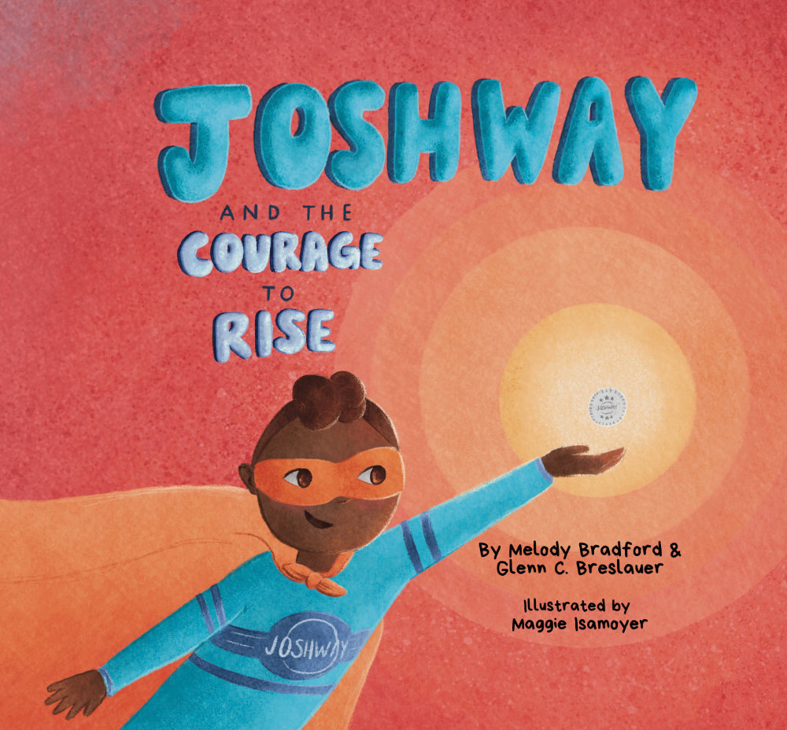

Name the feeling.
Fear, frustration, and uncertainty can feel enormous. Courage starts by saying what is happening inside.
Meet Josh—a young hero discovering that the biggest journeys begin when we face what we feel, reach for help, and choose to rise.
Fear, frustration, and uncertainty can feel enormous. Courage starts by saying what is happening inside.
Even superheroes need a team. Reaching toward a coach, parent, teacher, or friend is strength in action.
“I don’t have to carry this alone.”
Getting back up does not erase the fall. It turns the next step into a brave one—and shows someone else that they can rise, too.
JOSHWAY and the Courage to Rise helps young readers talk about big feelings, trusted support, and the brave choice to keep moving forward. Every book supports JOSHWAY’s work with young people in Easton.

ONE STORY